|
|
| Bryozoans Phylum Bryozoa updated Nov 2019
Where seen? Delicate lacy creatures, bryozoans encrust hard surfaces and even living seagrasses and seaweeds. Larger ones are sometimes seen on our Northern shores, but tiny ones are probably quite common but simply overlooked. What is a bryozoan? Bryozoans belong to Phylum Bryozoa. 'Bryozoa' means 'moss animals' in Greek. Indeed, they often look like moss, mats of algae or lacy, branching seaweed. Bryozoans are often mistaken for plants. There are about 5,000 species of bryozoans. Features: Bryozoans are colonies of minute individual animals called zooids. Each zooid is about the size of a pinhead but has distinct organs and ring of tentacles (called the lophophore) forming a funnel around a mouth. Each zooid builds a hard casing around itself (called a house), usually made of calcium carbonate. The tentacles emerge through an opening to filter feed. The tentacles can be quickly withdrawn into the house and the opening secured with a tiny lid. The colony forms as the zooids reproduce by budding. Each new casing remaining attached to the colonial members around it. A colony may have millions of individual zooids. Some colonies take the shape of encrusting layers, others develop into delicate ruffles or branching forms. So bryozoans are sometimes called sea mats, moss animals or lace corals. They grow over hard surfaces in the sea, including seaweed and the surface of sand grains. Colonies that we have seen are lacy and white, to about 5-7cm wide. Some are much smaller and encrust hard surfaces or living seaweeds and seagrasses. They may also encrust living horseshoe crabs. |
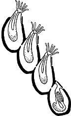 Bryozoans are complex animals with tiny tentacles and live inside a hard case that they can retract into. |
 Encrusting a living seagrasses Changi, Aug 08 |
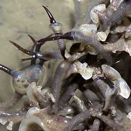 Encrusting a living seaweed! Changi, Aug 05 |
| Bryozoan Food: Bryozoans are believed
to feed on bacteria and plankton. Their tentacles are covered with
cilia (tiny beating hairs) that generate a current through the lophophore
and thus filter out edible titbits. A bryozoan has a U-shaped digestive tract that brings its anus back to the opening in the house, next to the lophophore, for waste disposal. Bryozoan Rebirth: Each individual zooid may completely degenerate within its house and is later regenerated again by the house. Remains of the old zooid might be consumed by the new zooid. Each zooid might do this 4 or more times. In a single colony, various zooids might be at one of these stages of death and rebirth. Bryozoan Babies: A bryozoan colony grows by budding, but bryozoans also reproduce sexually. Most bryozoan colonies are hermaphrodites, but each zooid is usually either male or female. Most bryozoans shed their sperm into the water but brood their eggs. The parent zooid usually degenerates as the embryo develops. It may later be regenerated after the free-swimming larva literally leaves the house. These eventually settle down and start a new bryozoan colony. Some produce a particular kind of larva called cyphonautes that is enclosed by a pair of shells and can remain drifting for many months. Human uses: Being immobile, bryozoans may help protect themselves with chemicals which deter potential predators. Some of these chemicals are being studied for human medical applications. A bryozoan compound is part of the drug bryostatin which is being tested as an anti-cancer drug. |
 Glassy branching bryozoans Pulau Sekudu, Oct 11 |
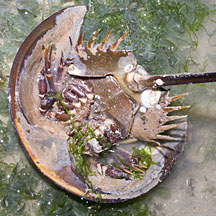 Chek Jawa, Aug 13 |
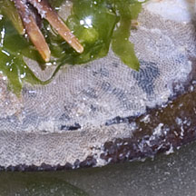 Growing on a living horseshoe crab. |
| Bryozoans on Singapore shores |
On wildsingapore
flickr
|
| Other sightings on Singapore shores |
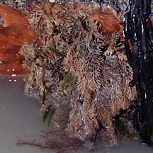 Pulau Ubin, Dec 09 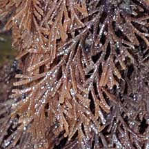 |
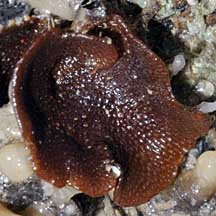 Pulau Ubin, Dec 09 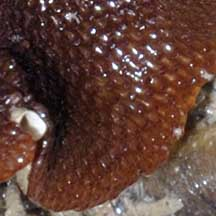 |
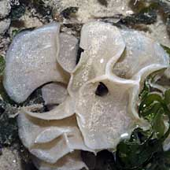 Chek Jawa, Oct 03 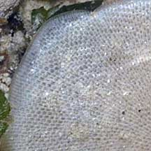 |
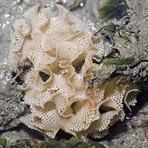 Beting Bronok, Jun 04 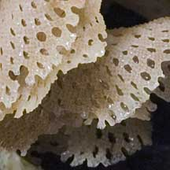 |
Links
References
|